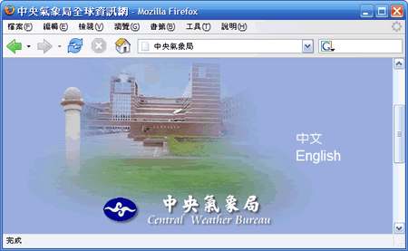

使用 Firefox 搜尋網頁
Firefox 在瀏覽工具列中加入了搜尋方塊，並將位址列整合 Google 的「好手氣」功能，能更快速的搜尋網頁。
您可以藉由點選瀏覽器右上角的搜尋方塊來使用這項功能。輸入關鍵字、按下 Enter，您再也不需要瀏覽特定網站，搜尋功能就在瀏覽器上。
Firefox 已經預先安裝了最常見也最有用的搜尋引擎，包括 Google、Yahoo、Amazon、eBay、Dictionary.com；更棒的是，您可以自行下載更多搜尋引擎。
實際瞧瞧
Firefox 整合 Google 的「好手氣」搜尋功能，只要在網址列輸入「台北市政府」或「中央氣象局」這樣的關鍵字，您就可以直接連上這些官方網站。

在網址列輸入「中央氣象局」，您就可以直接連上官方網站。
進階技巧
快上加快
這裡有一些能讓您搜尋資料更加快速的方法
- 您可為任何搜尋網站的查詢字句設立關鍵字，在網站上的關鍵字輸入區按下右鍵，選擇「對此次搜尋加入關鍵字」，接著輸入一個關鍵字，將查詢式加入書籤吧。
- 搜尋時同時按下 Alt 和 Enter 便能以新分頁顯示搜尋結果。
- 您可以選取網頁中一段文字，然後拖曳到搜尋方塊上進行搜尋。
更多搜尋引擎
不只能用 Google－透過搜尋方塊，您可使用網路上許多的搜尋引擎：
- 如果您按下搜尋方塊左側的圖示，便會出現搜尋引擎清單。您可在欲使用的引擎圖示上按一下、將其設定為現行搜尋引擎，往後按下 Enter 時就能使用此引擎搜尋了。
- 如欲新增搜尋引擎，只要點選搜尋方塊左側的圖示並選擇「新增搜尋引擎...」，便可以連到 Mycroft 網頁選擇額外的引擎。